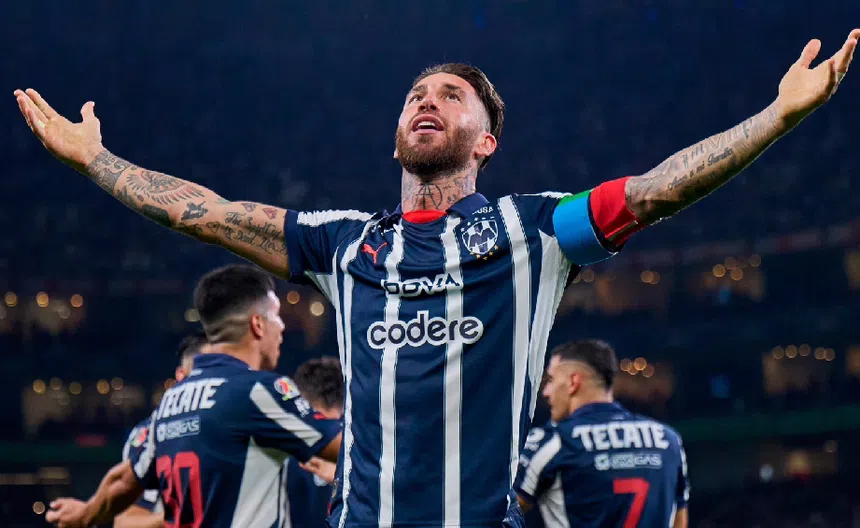
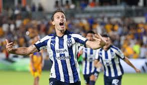
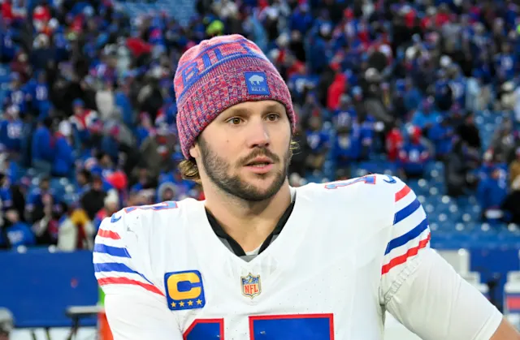
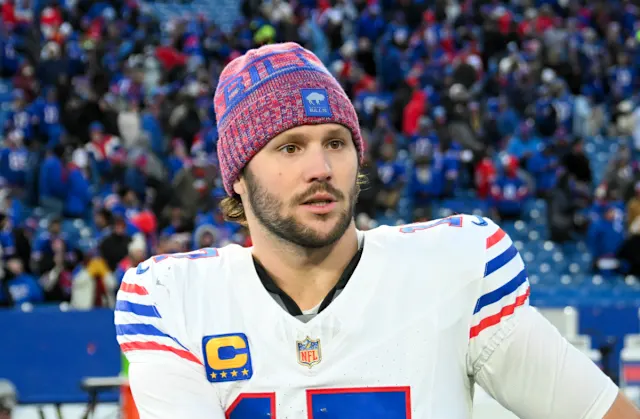
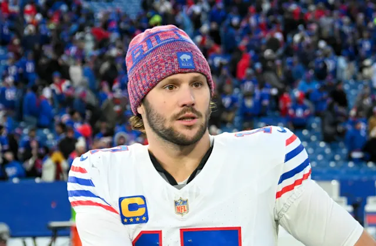

Mi equipo nacional es el Equipo de Futbol Monterrey, conocido como rayados, un equipo que es reconocido mundialmente por su participacion en el mundial de clubes y por su fichaje mas reciente que actualmente ya no esta activo del jugador Sergio Ramos, asi como Sergio Canales, Antony Marthial, entre otros.
RAYADOS


Principalmente a este equipo ya que desde pequeño me enseñaron que este era mi equipo, mi papa me llevo al estadio y asi como estuvimos en las beunas tambien vamos a estar en las malas.
Me gusta ver futbol americano
Mi equipo base son un equipo profesional de fútbol americano de los Estados Unidos con sede en el área metropolitana de Búfalo-Niagara Falls, Nueva York.
BUFALLO BILLS

Y en la imagen podemos apreciar a su mariscal de campo(QB), su nombre es Joshua Patrick Allen, Destaca por su potente brazo, capacidad para lanzar pases largos y su habilidad para correr el balón, lo que lo convierte en un quarterback muy completo y atlético. Desde su llegada a la NFL, se ha consolidado como uno de los mejores quarterbacks de la liga y ha llevado a los Bills a múltiples apariciones en playoffs
Equipos a los que le voy:
Buffalo Bills
Los Buffalo Bills son un equipo profesional de fútbol americano con sede en Búfalo, Nueva York, que compite en la División Este de la Conferencia Americana (AFC) de la NFL.
Rayados
El Club de Fútbol Monterrey, mejor conocido como Rayados, es un equipo de fútbol profesional de la Liga MX, fundado el 28 de junio de 1945 y con sede en Nuevo León, México.
 
